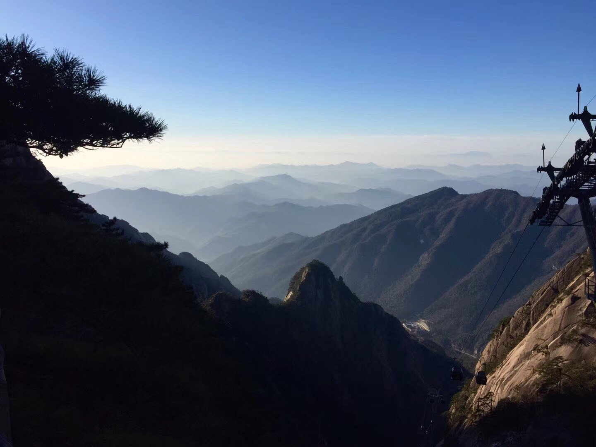

My home country, China, is the third largest country in the world with a diverse range of landforms. As one of the four ancient civilizations, China also has a long history with rich heritage cultural resources. Travelling in China helps me know about this blue planet and enjoy beautiful natural and humanity landscapes.
After I came to USA this year, I went to New York during Thanksgiving break.
